A new and innovative way of doing resistance measurements with V93000 HSM3G
Michael Daub, Verigy
Paper-ID: 127884 May 2011
Abstract
Verigy's new High-Speed-Memory test system series provides plenty of new functionalities to address the requirements of today's and the next generation memory devices.
One of the new functionalities is the ability to perform pattern controlled dc value measurements in a fast manner. In this context pattern controlled means synchronous and parallel execution on all device sites under test in a high volume manufacturing environment, as well as best flexibility and accuracy for any characterization task.
This paper introduces the new concept of pattern controlled DC value measurements. It describes how to utilize the capabilities of the new High-Speed-Memory hardware generation based on a concrete DDR3 use case.
Key Words
Pattern controlled, DC value measurement, parallel, fast, HSM3G, high site count, high volume manufacturing, characterization
Introduction
Today's state-of-the-art memory devices implement self-calibrating resistor structures to improve signal performance in the final application. For the production process it is mandatory to verify whether this self-calibration of resistors works correctly with sufficient accuracy and speed.
The self-calibration refers to a reference resistor and is triggered by a specific pattern protocol with a defined maximum time to finish. Therefore, the verification must be done in real-time and as close as possible to the calibration process, to ensure that the self-calibration is completed in its specified time.
Furthermore, the memory production process is a very high site count process (256), which needs to be considered as well, especially from test time point of view.
This implies two challenges:
- Real-time resistance value measurement to guarantee specifications.
- Test time to guarantee productivity of the production process.
The solution to these challenges is to run the calibration - measurement loop within one memory pattern, and in parallel for all measurement entities.
All of the above can easily be accomplished, by the V93000 HSM3G provided per-pin architecture and its sequencing capabilities. With HSM3G it is possible to perform fast per-pin parallel value measurements synchronously to the memory protocol and within one memory pattern run.
DDR3 resistor structures and calibration concept
It is all about signal reflection.
A ball that is thrown against a wall will bounce back. Similarly, electrical signals are reflected back when they reach the end of a transmission path. Electrical signals can also be reflected at points where impedance differs, such as a bus or DRAM connection points.
Signal reflection causes noise, which lowers signal quality. In a high-speed data transfer system, high-quality signals are required, but even a slight amount of noise can be a major problem.
To account for that DDR3 implements driver calibration as well as some on-die termination scheme ("ODT".)
- The first one is to improve the signal quality of data driven by the memory ("Ron".)
- The second one is to improve the signal quality of data received by the memory ("Rtt".)
Both resistances will be calibrated by the device itself using an external 240 ohm reference resistor ("RZQ".)
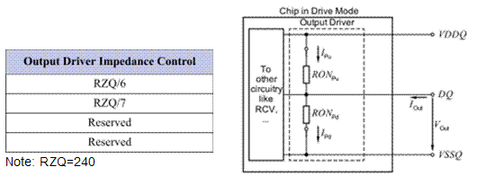
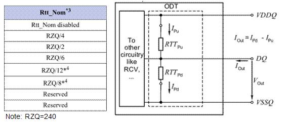
Ron and Rtt are applied to DQ, DM, DQS/DQS# and TDQS/TDQS# (if available) signals of the DDR3 memory.
DDR3 has the flexibility in being able to select between various Ron and Rtt resistance values to provide the best possible match to the final application. The desired value has to be programmed during the memory initialization, but can also be changed during operation by a defined register access.
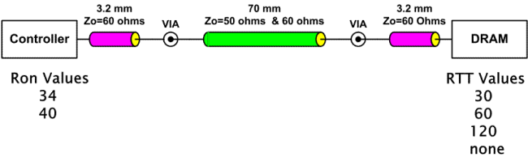
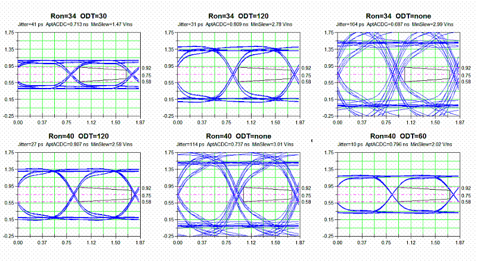
DRAM resistance self-calibration is triggered by a special command ("ZQCL"). This command can be issued whenever necessary. The only boundary for the condition is that all DRAM banks have to be pre-charged, i.e. closed, and no active write or read is happening.
The first calibration of the driver and on-die termination circuit happens during initialization/reset of the DRAM.
The DRAM needs a longer time to calibrate at the initialization/reset ("tZQinit") and a relatively smaller time to perform periodic calibrations during the operation ("tZQoper".)
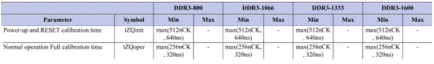
Pattern Controlled DC Value Measurement Concept
The concept is based on per-pin parallel parametric measurement unit ("PMU") measurements within a pattern run. This concept is already available for the older generations of high speed memory ("HSM") pin cards, but only supporting Pass/Fail judgment. Also the old generation was required to run break vectors during the measurement.
The new HSM pin card generation (HSM3G/HSM6800) adds two new capabilities:
- Parallel value measurement within a pattern run
- Measurement while running vector data instead of break vectors
For the new HSM cards, the per-pin test-processor has the capability to emulate a value measurement. This so-called direct measurement uses the test-processor built-in embedded core to execute a PMU value measurement. As it is controlled by the embedded core it is able to run parallel to any vector data generation which is controlled by the test-processor sequencer, but still allowing a synchronous trigger. This concept allows having a valid protocol at the device while doing the measurement.
In general a typical measurement sequence consists of three parts with different sequencing data:
- Measurement pre-actions:
This can be described by programming the PMU setup incl. measurement path setting, i.e. relay switching. During that period break vectors are executed.
- Measurement execution action:
This is the value measurement controlled by the embedded core.
- Firstly, break vectors are executed to trigger the measurement.
- Secondly, normal vector data is referenced during the measurement.
- Measurement post-action:
This can be described as some clean-up actions, i.e. unsetting measurement path. During that period break vectors are executed.
For the measurement execution action it is required to keep the vector data running until the embedded core has finished its measurement. This execution period is specified to be 250us maximum, controlled by the embedded core. Follow-on actions that happen within this 250us period will be queued up by the embedded core.
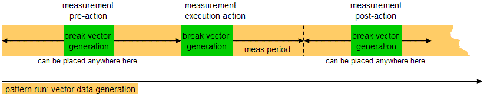
The actions are implemented as special labels, so-called "dc-sublabels". These labels will define special sequencer instructions to control the embedded core, which itself controls the PMU. While the instructions are processed break vectors are executed as described above.
The pattern holds anchor points which refer to the dc-sublabels. During execution the sequencer will jump to the specific dc-sublabel whenever an anchor point is met. The sublabel is executed and the sequencer jumps back to the pattern. The jumps will be executed on-the-fly without any dead time. However, vector data is suspended for the amount of break vector generation.
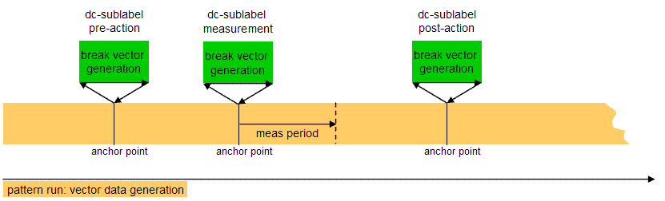
The sub label concept is required for a simple reason. Any sequencer based PMU action is not persistent. It has to be created at least once per session, which is usually done during the first execution. However, the measurement pattern is persistent and has to call the PMU actions. As it is not possible for the pattern to refer to non-persistent data, the sublabels have been introduced. These sublabels are a persistent data which can be referred to from the pattern even when they are just acting as some kind of container for to be defined PMU actions.
Usually the measurement is setup on a subset of the defined pins only. Only these so-called measurement pins will execute the measurement sequence.
All other defined pins (aka non-measurement pins) can select between two different operation modes with quite different characteristics. Dependent on the use case may have to select between them.
- Option 1: Break Vector Mode
In this mode break vector cycles are constantly repeated for the various actions. During the measurement execution period ("meas period") vector data will be driven. This is the same behavior as for the defined measurement pins.
The benefit of the break vector mode is that it allows in keeping measurement and non-measurement pins synchronous. This is especially important when executing multiple measurements in one pattern.
In this mode, care has to be taken for the 250us measurement execution period. Any action within this period will be queued up for the measurement pins, but not queued up for the non-measurement ones. This means that consecutive actions, i.e. post-actions, or follow on actions should keep a minimum distance that will at least fulfill the period requirement.
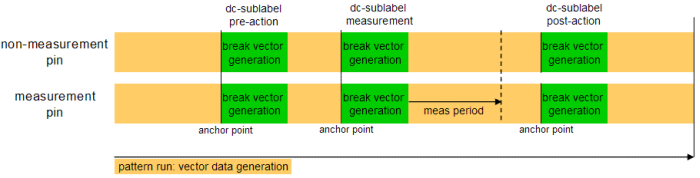
- Option 2: Continuous Pattern Mode
This mode is running continuous vector data on non-measurement pins. The benefit is, that it allows in keeping whatever protocol alive that cannot be accomplished by break vector execution, however, it breaks the sync between measure and non-measure pins. This is because the measurement pins will add the actions, while the non-measurement pins will continue driving the vector data. For a successful measurement execution, it has to be guaranteed that the vector data is continuously running until the measurement sequence has finished.
In this mode only a single dc-sublabel can be executed. Also this measurement has to happen at the end of the pattern, due to the out-of-sync behavior.
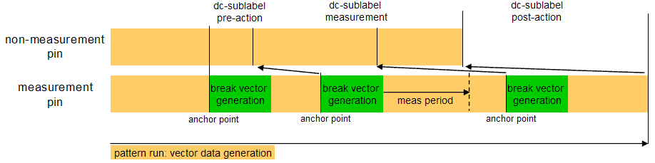
Pattern Controlled DC Value Measurement Setup
The measurement setup is split into three parts. The first part is taking care of the PMU and relay switching setup (action setup) and is done via a test method. It is also taking care of the dc-sublabel creation.
The second part is the definition of the anchor points within the pattern. For memory test this will be done inside the Algorithmic Pattern Generator ("APG") definition of the pattern. The APG setup also defines the execution mode for the non-measurement pins - break vector mode or continuous pattern mode.
The third part is defined by measurement execution and result processing. This is done within the same test method as described for the first part.
In summary, a single test method is used to control the overall measurement sequence.
Following detail explanation will focus on the "Ron" type of measurement.
Part 1: Instrument setup and dc-sublabel creation:
There exists a special test method API for controlling the PMU and its relays. These API's have to be used in order to set up the actions. Finally there is a controller API that will add the actions to the various dc-sublabels. The dc-sublabels have to be created once using the Pattern Editor.
Test method based PMU and relay setup:
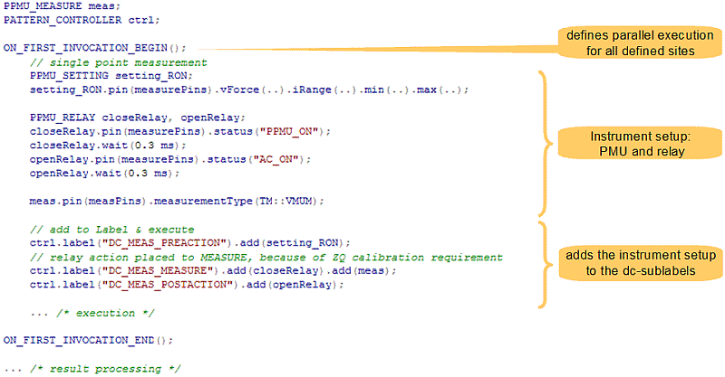
PPMU_SETTING, PPMU_RELAY and
PPMU_MEASURE are used to control the
PMU.
PATTERN_CONTROLLER is used to define the dc-sublabel content and
final execution.
There are three dc-sublabels that refer to the individual PMU control objects. In general there is no need for three different dc-sublabels. It can also be accomplished with just one. The split into 3 parts is because of the "Ron" measurement requirements:
- measurement should happen shortly after resistor calibration
- PMU setup needs to be separated from measurement
DC_MEAS_PREACTION
- during resistor calibration there should be no specific load applied to the pins valid for calibration
- relay can be closed only direct in front of measurement. Relay action cannot be part of pre-action
DC_MEAS_MEASURE
- measurement and following relay restoration need to take care for the 250us of measurement
execution time
- pattern run for minimum distance of 250us before relay restoration
DC_MEAS_POSTACTION
The execution sequence of the various dc-sublabels is defined within the APG setup.
dc-sublabel creation:
As discussed above the sublabels are acting as some
kind of persistent container for the non-persistent PMU actions. The necessary sequencer
instructions to call the PMU actions are added during first execution of the
PATTERN_CONTROLLER setup.
To support this concept the dc-sublabels need to be created upfront once. Doing so the sublabels are created without any content and made persistent to the setup.
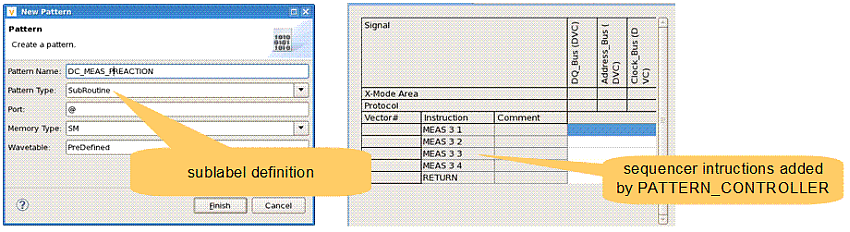
Part 2: APG setup
The APG setup defines the execution sequence by specifying the anchor points of the dc-sublabels within the pattern. It also defines the operation mode of the non-measurement pins.
Anchor point setting; execution sequence definition:
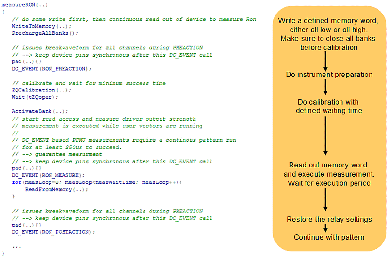
Each DC_EVENT call will set an anchor point within the pattern. The anchor point will refer to the specified dc-sublabel. During the pattern run the sequencer will call this sublabel on-the-fly.
Sublabel calls have to be aligned with the vector cycle. The APG provides an automatic alignment option for this - so-called padding routine pad().
For the "Ron" measurement it is required to measure the pull-up and pull-down resistance of the DDR3 memory. Therefore, the above APG sequence has to be called twice for the pattern.
- measuring the pull-up resistance by writing/reading a high level
- measuring the pull-down resistance by writing/reading a low level
Doing multiple DC_EVENT calls within a pattern required to take care of the pin synchronous execution in between these calls. This implicitly requires to run the break vector mode for the non-measurement pins.
Operation mode definition for non-measurement pins:
This part is defined in a separate APG structure called dc-set definition. The dc-set definition itself is defined within a separate APG setup file. During APG compilation this file is linked to the program.
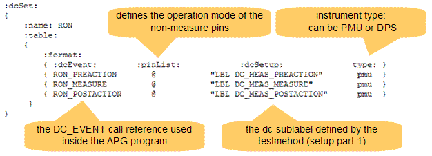
:dcEvent:Defines the PMU actions(s) that can be called from within the APG program. Each item refers to a specific pin list, dc-sublabel and measurement instrument.
:pinList:The pin list defines the operation mode of the non-measure pins. In the case of all pins defined "@" the non-measure pins will operate in the break vector mode.
In case of only the measurement pins being defined (same pins as defined in test method; setup part 1), the non-measurement pins will operate in continuous vector mode.
:dcSetup:Creates a link to the defined dc-sublabel. During pattern compile this reference will be evaluated and programmed to the pattern via a jump call to the sublabel.
:type:This is a generic setup vehicle also supporting Device Power Supply "DPS" measurements. In case of "Ron" and "Rtt" PMU will be used as instrument.
Part 3: execution and result processing
Execution and result processing is part of the general test method.
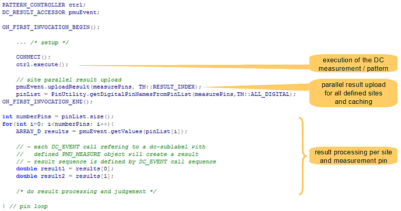
The PATTERN_CONTROLLER executes the DC measurement pattern.
Result upload will happen in parallel for all measurement pins and defined sites. The result will be cached for further processing.
Up to 1024 DC measurements can be executed within a pattern run. Each anchor point referring to a dc-sublabel with defined PMU_MEASURE action will provide a result. Individual anchor point result access is granted via some array structure. The anchor point sequence is mapped to the array index.
Conclusion
The new pattern controlled DC value measurement concept provides best flexibility, accuracy and performance for memory device characterization as well as high volume manufacturing.
Best flexibility and accuracy,
- as it allows in placing measurement points wherever needed within the pattern, considering any memory protocol.
- as it is able to perform voltage and/or current measurements, even within the same pattern.
- as it allows to do voltage and/or current metering with up to 1024 individual measurement points per pattern.
- as it is taking care of the continuous synchronous execution on all pins.
Best performance, as it executes parallel on all measurement pins. A typical "Ron" value measurement pattern in high volume manufacturing takes about 350ms. This is for a pattern run on 256 sites with 8 measurement pins per site, a total of 2048 measurement pins.
References
[1] JEDEC JESD79-3E DDR3 SDRAM Specification, July 2010
[2] JEDEC DDR3 Workshop DDR3 ODT and Dynamic ODT, August 2007